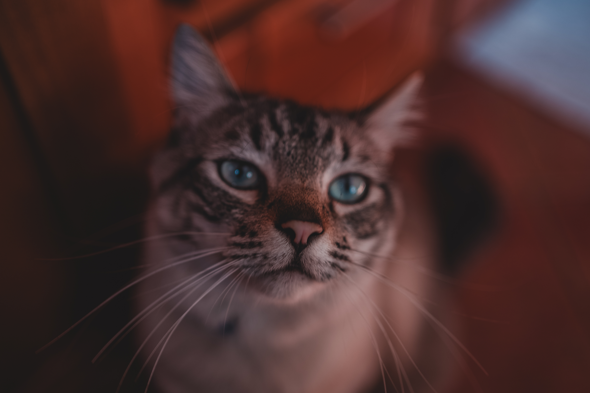

The weird domestic creature
Cats - (The UNIX/Linux Approach)
Independent, self-sufficient, and expect you to adapt to them.
They operate on a zero-trust model—everything is a security risk until proven otherwise.
Error logs are hidden; if something goes wrong, good luck debugging.
Silent, efficient, and mysterious—only showing affection on their own terms.
System updates are unpredictable—sometimes they work smoothly, sometimes they crash into walls at 3 AM.

More About Cats!
The non-weird domestic creature
Dogs - (The Windows Approach)
User-friendly, enthusiastic, and built for interaction.
Full-trust model—they’ll run any command you give them, even if it’s "chase your own tail."
If something breaks, they notify you immediately (usually by barking).
Always available, always ready to serve, even if it means rebooting at inconvenient times (zoomies).
System logs are open and verbose—happiness, sadness, hunger, all clearly communicated.
 More About Dogs!
More About Dogs!